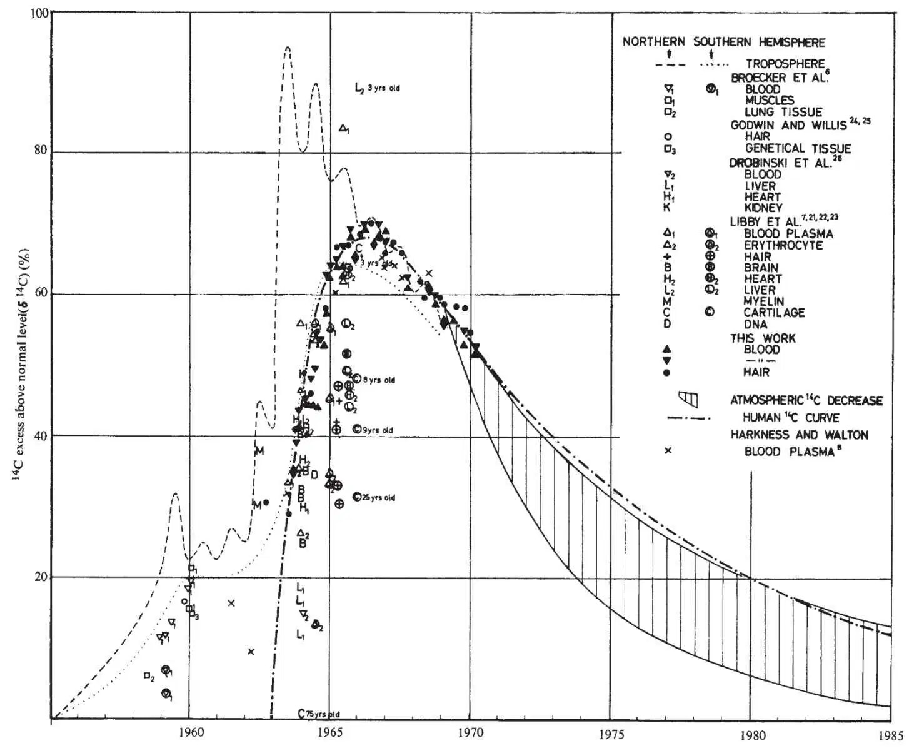
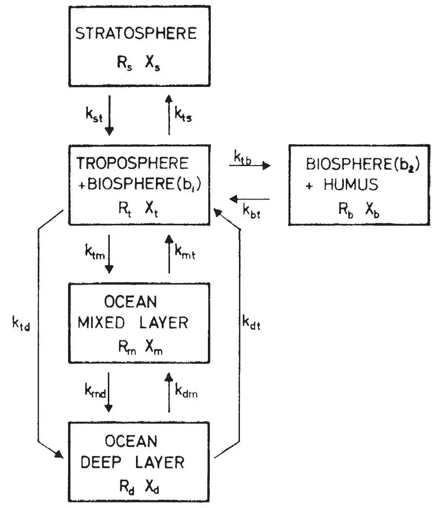
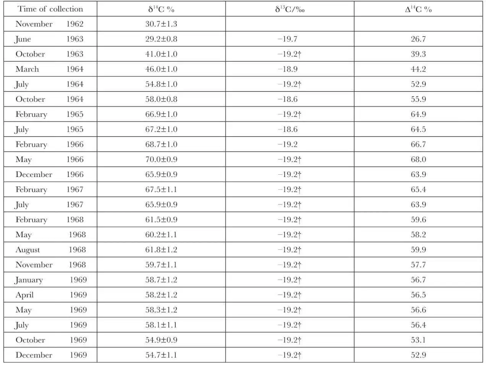
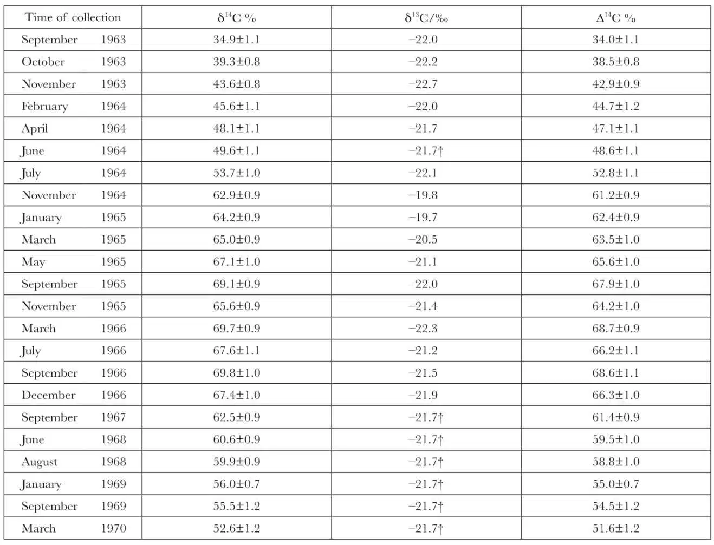
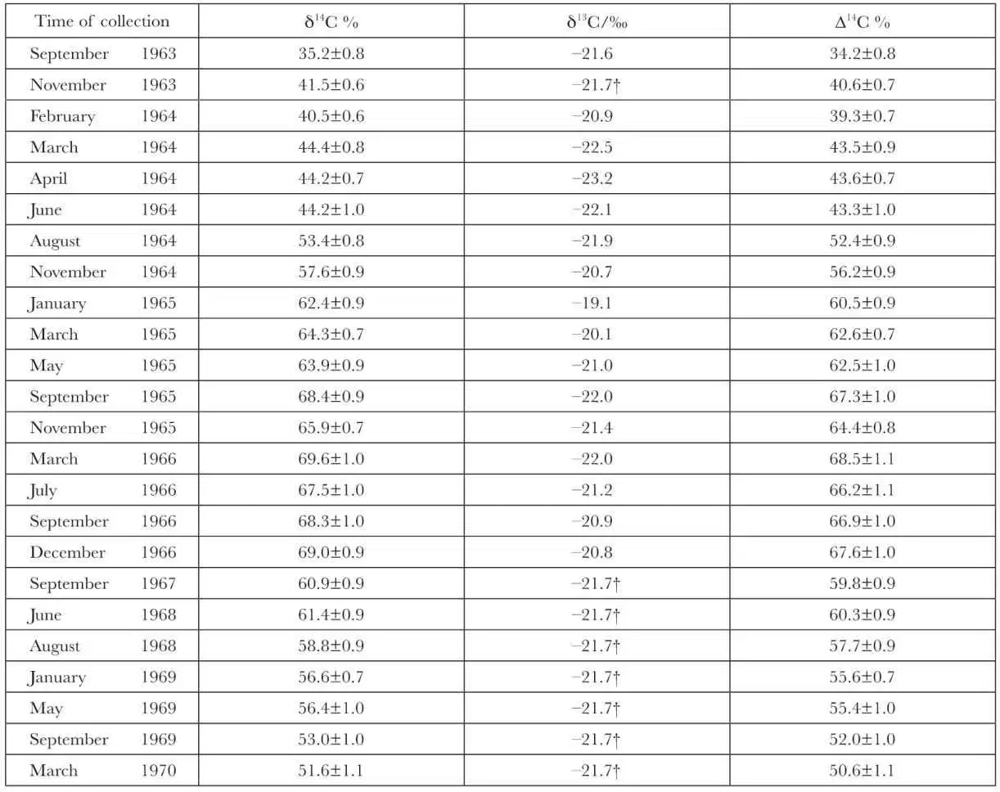
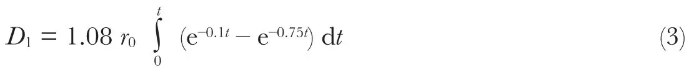
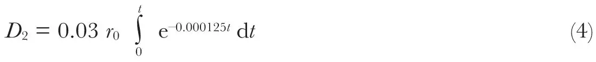

中文
中文R. Nydal et al.
Editor’s Note
Understanding the cycling of carbon between the atmosphere, oceans and biosphere (owing mostly to the uptake of carbon dioxide in photosynthesis) is essential for predicting how anthropogenic greenhouse gases affect climate. This paper from scientists at the Norwegian Institute of Technology shows how interest in the carbon cycle was already burgeoning in the early 1970s. It is expressed within the context of its time: it focuses on how the radioactive isotope carbon-14 (14C), released into the atmosphere by nuclear weapons tests, will increase in the human body, which was considered a potential health risk. Strikingly, this increase is very short-lived, because the bomb 14C is rapidly diluted by carbon dioxide released from fossil-fuel burning—today considered a much greater hazard. 中文
IN the atmosphere 14C occurs principally as 14CO2 and is usually produced by nuclear reactions between cosmic ray neutrons and the nitrogen atoms of the air. The natural equilibrium between production and disintegration of 14C determines a part of the natural background radiation to the human population. From 1955 there has been a gradual increase of 14C in the atmosphere, the land biosphere and the ocean, as a result of nuclear tests. Although 14C was initially not regarded as an important hazard to man1, it was later pointed out2-4 that 14C could be a source of appreciable genetic hazard in the world’s population, because of its long half life (5,700 yr). 中文
At this laboratory we have studied the 14C concentration in the human body5. The correspondence between 14C in the atmosphere and in the human body, mediated as it is by photosynthesis, has been confirmed in 6 yr of measurements6-8. 中文
Since 1955, about two-thirds of the total nuclear energy liberated in nuclear tests has resulted from tests carried out in the atmosphere at high northern latitudes in 1961 and 1962 (ref. 9). The subsequent transfer of 14C down to the troposphere, the biosphere and the ocean has been followed in detail10-16. The 14C excess16 (δ14C) in the northern troposphere (Fig. 1) is representative chiefly of the region between 30°N and 90°N, although the curve for the southern troposphere is representative of the region from the equator to 90°S. 中文

Fig. 1. Radiocarbon in the troposphere and human body. 中文
The model for CO2 exchange between the various reservoirs is shown in Fig. 2, in which the CO2 in the troposphere is in exchange with CO2 in the stratosphere, the land biosphere and the ocean. For CO2 exchange between the troposphere and the biosphere we share the view of Münnich (for discussion, see ref. 17), who divided the biosphere into two parts. The first (b1), which consists of leaves, grass, branches, and so on, is in rapid exchange with the troposphere and is combined with this reservoir, but the larger part of the vegetation (b2) has a much slower exchange rate and is combined with the humus layer. 中文

Fig. 2. Exchangeable carbon reservoirs, where: Rt, total carbon amount; Xt, 14C excess; kij, exchange coefficients; i, j, t, b, m, d (i ≠ j). 中文
The ocean is divided into two reservoirs, the mixed layer and the deep ocean. The exchange of CO2 between the troposphere and the ocean occurs chiefly in the mixed layer, but according to Craig18 there is also the possibility of a direct exchange with the deep ocean. The 14C concentration in the mixed layer of the ocean is now 10 to 15% above normall9,20. 中文
Using the model of Fig. 2, we have treated the decrease of δ14C in the troposphere in a previous article20. We showed that the measured variation of δ14C (xt) in the troposphere is approximately reproduced by the following two-term exponential function:
xt = A1e–k1t + A2e–k2t
(1)
in which the parameters A1, A2, k1 and k2 depend on the various exchange coefficients. Because the errors on some of these coefficients are large, the extrapolation is uncertain and is given in the shaded area of Fig. 1. 中文
The amount of bomb-produced 14C in the atmosphere has increased the total natural amount of 14C in nature by about 3%. According to Harkness et al.8, the production of CO2 from fossil fuel would lower the natural 14C concentration in the atmosphere to about 16% below normal at the end of this century. It is thus reasonable that the 14C excess caused by the atomic bomb will be more than compensated for by the dilution of inactive carbon (the Suess effect). 中文
The transfer of 14C into the human body depends on the following three factors: (1) the time between the photosynthesis in vegetational food and its consumption; (2) the diet, particularly the amount of vegetational food, and (3) the residence time of the carbon in the constituents of human tissue. 中文
Broecker et al.6 (Fig. 1) found that it took 1 and 1.8 yr before the 14C concentration in blood and lung tissue, respectively, reached that in the atmosphere. They also found that the δ14C value of blood had a maximum time lag of 6 months behind food. 中文
Berger and collaborators7,21-23 (Fig. 1) studied chiefly the metabolic turnover time of the constituents of human tissue. For this they used samples from persons who had travelled from the southern to the northern hemisphere. One result of their work was that the incorporation in these people of 14C in brain protein and lipids, liver, heart, plasma protein and erythrocyte protein was very similar to, and reflected, the atmospheric 14C content present several months earlier. Collagen of cartilage was found to be metabolically inert in older persons. The concentration of 14C in the human body has been studied by other workers (refs. 8, 24–26) who obtained values shown in Fig. 1. 中文
At our laboratory the transfer of 14C into the human body was studied by following the time-variation of δ14C in blood and hair for three persons5,27 (Tables 1–3). No separation between blood plasma and erythrocyte protein was performed, and the measured 14C activity is thus a mean value for the total blood samples. Fig. 1 shows that there is excellent agreement between data obtained for the blood and for the hair samples. The values of the 14C concentration in blood plasma obtained by Harkness and Walton8 are slightly lower than ours. 中文
Table 1. Carbon in Neck Hair, from a Boy (K.N.) Born in 1962

† Not measured (mean value). 中文
Table 2. Carbon in Blood Samples, from a Woman (I.N.), 26 Yr Old in 1963

† Not measured (mean value). 中文
Table 3. Carbon in Blood Samples, from a Woman (A.L.), 26 Yr Old in 1963

† Not measured (mean value). 中文
The blood and hair data are almost representative for persons living in the northern hemisphere. Because δ14C in the southern troposphere at present lags behind that of the northern troposphere by about 1 yr, there should also be a similar lag for δ14C in the human populations of the respective hemispheres. After about 1970, the 14C concentrations in people in the northern and southern hemispheres will be similar, and equal to those in the troposphere. Fig. 1 shows that δ14C (xH) in the human body appears as a pulse, delayed with respect to that of the atmosphere. The observed values for xH can be fitted reasonably well by the following two-term exponential function:
xH = 108 (e–0.1t – e–0.75t)
(2)
The coefficients in this function were determined by a least mean squares method, using the upper limits of the measured values for 14C in the human body in the period from 1963 to 1970, and extrapolated values in the troposphere in the period from 1970 to 2000. The upper limit values were chosen because there was some excess 14C before 1963 which should also be considered. There is also a tendency for the blood and hair data during the last 2 yr to correspond with the upper limit of the shaded area in Fig. 1. Function (2) was simplified by assuming that all previous nuclear tests occurred within a short time interval, and that the 14C increase in the human population started in about January 1963. 中文
The first term in the brackets of equation (2) indicates that the excess 14C in the human body has a mean lifetime of about 10 yr and the second term that 14C enters the human body with a mean delay time of about 1.4 yr after production in the atmosphere. The latter value is probably accurate to within 30% and agrees with previous estimates6,7. 中文
The hazard to the human population from artificial radiocarbon arises largely from inventory radiation of the body. Natural 14C contributes with a certain dose rate, r0, as a result of its decay rate of about fourteen disintegrations per min per gram of carbon. The average value of r0 is about 1.06 mrad/yr9. The dose from natural 14C is distributed as follows: 1.64 mrad/yr in the bones, 1.15 mrad/yr in the cells lining bone surfaces and 0.71 mrad/yr in bone marrow and soft tissue. Applying function (2), the dose D1 absorbed in the human body during a time t can be calculated from the formula:

For a period of about 30 yr the total radiation dose from this source will be 9r0. We thus obtain a total radiation dose of 16 mrad to bone, 11 mrad to cells lining bone surfaces and 7 mrad to bone marrow and soft tissue. The genetic hazard is caused by the latter. That dose constitutes about 10% of the total gonad dose from all radioactive fallout. Purdom4 pointed out, however, that the actual gonad dose is somewhat larger because of a transmutation process in the DNA molecule, in which the decaying 14C atoms are replaced by nitrogen atoms. Purdom assumed that the biological damage from the transmutation was equal to that from β-radiation. 中文
The amount of artificial 14C in the human body at about the year AD 2000 will constitute about 3% of the total amount of 14C. This isotope has a half-life of 5,700 yr, and several scientists2,3,9,28 think that it would therefore cause a most serious genetic threat. The long term radiation dose can be calculated from the formula

The total radiation doses (D1+D2) which will be received by the bone cells, the cells lining bone surfaces, and the bone marrow and soft tissue in the next 10,000 yr will be 410, 290 and 180 mrad, respectively. These doses, which are in agreement with values given in a United Nations report9 (page 45), are more important than those from all other radioactive fallout. We question, however, the value of the long term radiation dose (D2) because, as previously mentioned, the use of fossil fuel might reduce the 14C concentration in man below normal. We are of the opinion that the only 14C hazard from previous tests which should be taken into account is attributable to a total genetic dose (D) of the order of 10 mrad, received in a period of about 30 yr. This dose is, however, negligible compared with the dose received from natural sources, which constitutes about 100 mrad per yr. 中文
We thank Norges Almenvitenskapelige Forskningsråd for financial support. 中文
(232, 418-421; 1971)
Reidar Nydal, Knut Lövseth and Oddveig Syrstad: Radiological Dating Laboratory, Norwegian Institute of Technology, Trondheim, Norway.
Received November 10, 1969; revised August 24, 1970.
References:
1. Libby, W. F., Science, 123, 657 (1956).
2. Pauling, L., Science, 128, 3333 (1958).
3. Sakharow, A. D., Soviet Scientists on the Danger of Nuclear Tests, 39 (Foreign Languages Publishing House, Moscow, 1960).
4. Purdom, C. E., New Scientist, 298, 255 (1962).
5. Nydal, R., Nature, 200, 212 (1963).
6. Broecker, W. A., Schulert, A., and Olson, E. A., Science, 130, 331 (1959).
7. Libby, W. F., Berger, R., Mead, J. F., Alexander, G. V., and Ross, J. F., Science, 146, 1170 (1964).
8. Harkness, D. D., and Walton, A., Nature, 223, 1216 (1969).
9. Rep. UN Sci. Comm. Effect of Atomic Radiation, No. 14 (A/5814) (United Nations, New York, 1964).
10. Münnich, K. O., and Roether, W., Proc. Monaco Symp., 93 (Vienna, 1967).
11. Bien, G., and Suess, H., Proc. Monaco Symp., 105 (Vienna, 1967).
12. Rafter, T. A., NZ J. Sci., 8, 4, 472 (1965).
13. Rafter, T. A., NZ J. Sci., 11, 4, 551 (1968).
14. Young, J. A., and Fairhall, A. W., J. Geophys. Res., 73, 1185 (1968).
15. Lal, D., and Rama, J. Geophys. Res., 71, 2865 (1966).
16. Nydal, R., J. Geophys. Res., 73, 3617 (1968).
17. Nydal, R., Symp. on Radioactive Dating and Methods of Low-Level Counting, UN Doc. SM 87/29 (International Atomic Energy Agency, Vienna, 1967).
18. Craig, H., Second UN Intern. Conf. on the Peaceful Uses of Atomic Energy, A/CONF. 15/P/1979 (June 1958).
19. Rafter, T. A., and O’Brien, B. J., Proc. 12th Nobel Symp. (Almquist and Wiksell, Uppsala, 1970).
20. Nydal, R., and Lövseth, K., CACR Symp. (Heidelberg, 1969);J. Geophys. Res., 75, 2271 (1970).
21. Berger, R., Fergusson, G. J., and Libby, W. F., Amer. J. Sci., Radiocarbon Suppl., 7, 336 (1965).
22. Berger, R., and Libby, W. F., Amer. J. Sci., Radiocarbon Suppl., 8, 467 (1966).
23. Berger, R., and Libby, W. F., Amer. J. Sci., Radiocarbon Suppl., 9, 477 (1967).
24. Godwin, H., and Willis, E. H., Amer. J. Sci., Radiocarbon Suppl., 2, 62 (1960).
25. Godwin, H., and Willis, E. H., Amer. J. Sci., Radiocarbon Suppl., 3, 77 (1961).
26. Drobinski, jun., J. C., La Gotta, D. P., Goldin, A. S., and Terril, jun., J. G., Health Phys., 11, 385 (1965).
27. Nydal, R., and Lövseth, K., Nature, 206, 1029 (1965).
28. Pauling, L., Les Prix Nobel, 296 (1963) (Nobelstiftelsen, Stockholm, 1964).